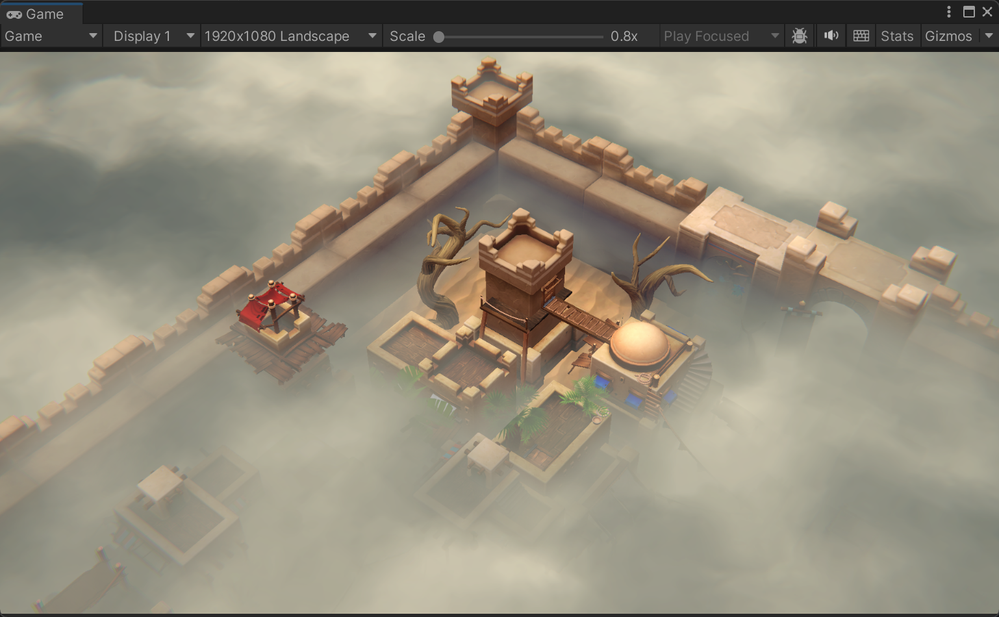
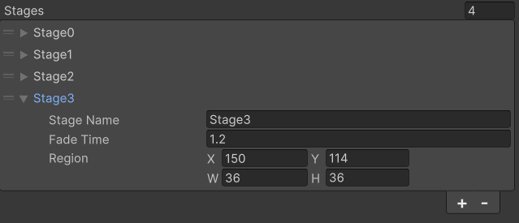
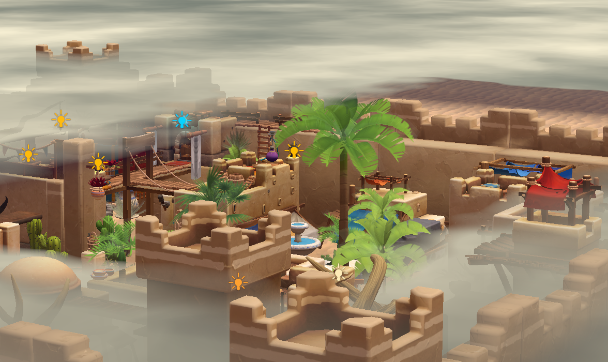
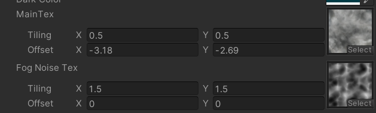
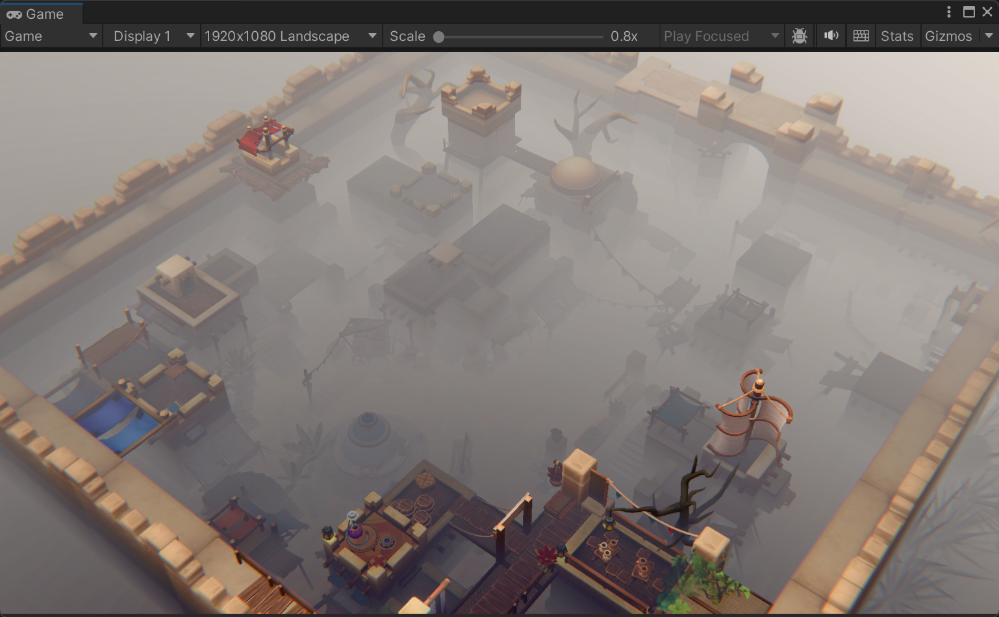
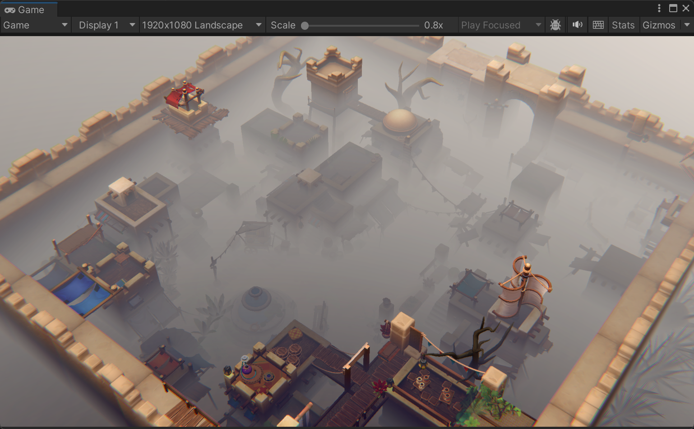
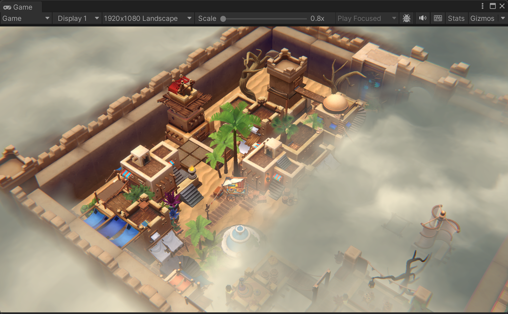

(注:模型来自 Unity 商城资源，仅展示使用)
将相机拉到特定角度可以看到Plane穿帮
主纹理和Noise
高度雾,做出下实上虚的效果
加入深度计算,解决雾和物体边缘衔接问题
Plane雾，像云
更多的层,但是还是不如体积雾
2. 局部Raymarch雾
和Scene窗口同步的工具,方便配置
只存储Rect,矩形数据足够了
迷雾
项目简介：迷雾可以分为渲染和功能两个互不干扰的模块。
渲染
1. 以片渲染迷雾片迷雾是实现最简单,性能也最好的一种方式,只需要一个Plane和贴图+噪声模拟:


为了模拟雾从下到上的浓厚感,加入高度雾和深度计算


理论上雾效差不多就可以这样,但是一些游戏为了 功能性 做得更像云

Plane雾还有个问题是难以做出体积感,所以在性能更好的设备上,可以开启更多层数,也可以增加阴影提供视觉的体积
功能性
迷雾常用来做战争迷雾,SLG里面则多按块解锁，不管表现方式,一般都是按笔刷的方式渲染RT，之后采样渲染
1.按块解锁按块解锁主要是方便策划配置,在合适的地方调用
只使用矩形存储,数据量少,功能满足的情况非常适合